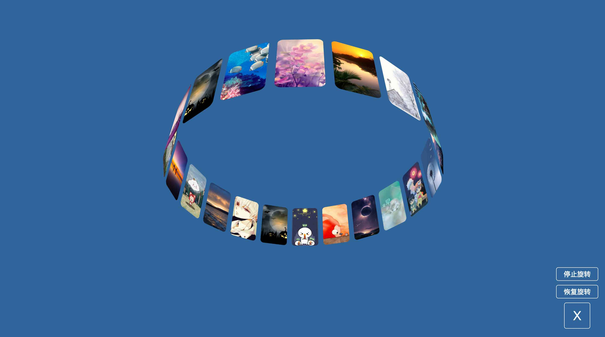
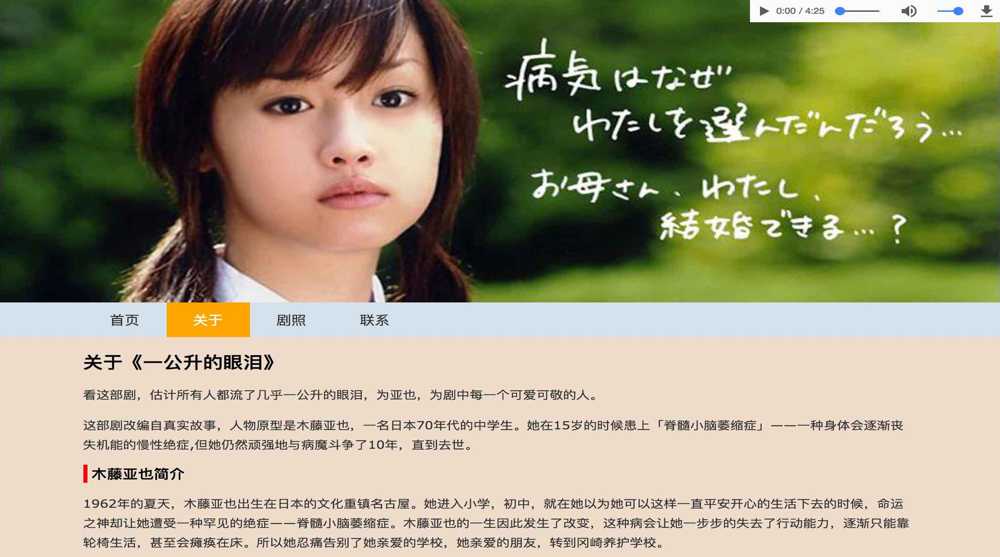
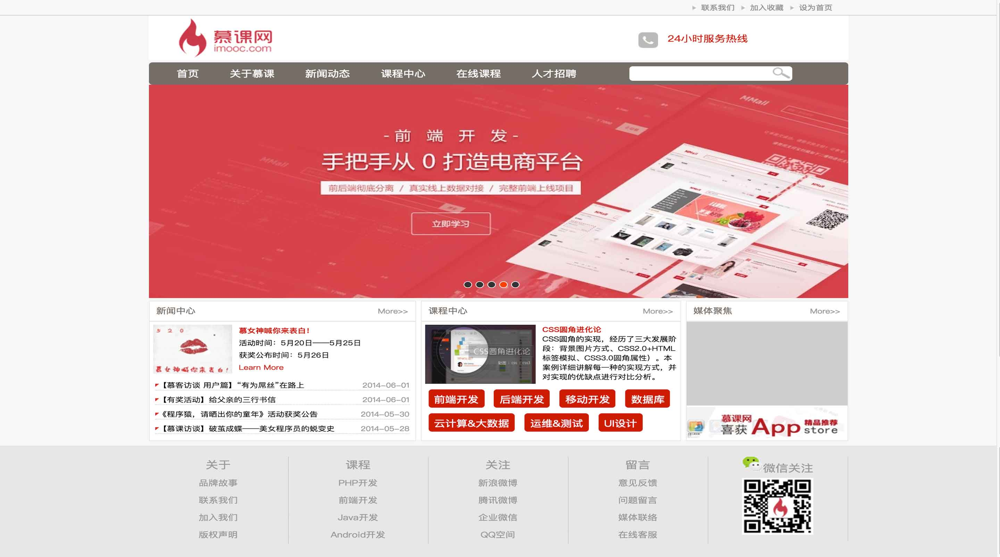
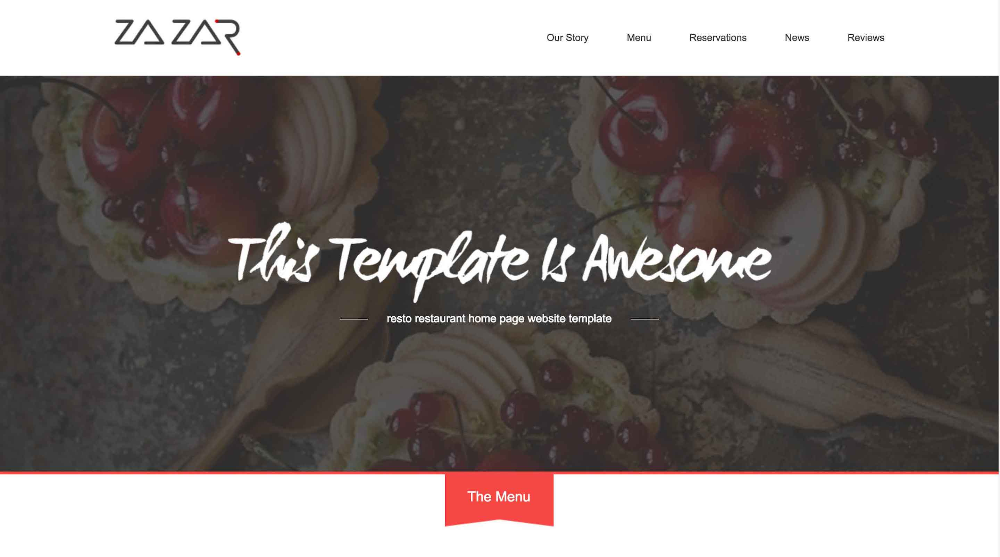
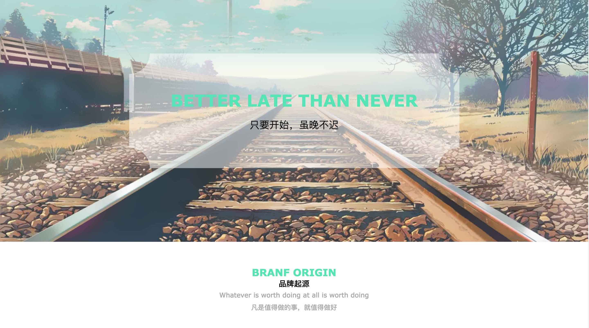
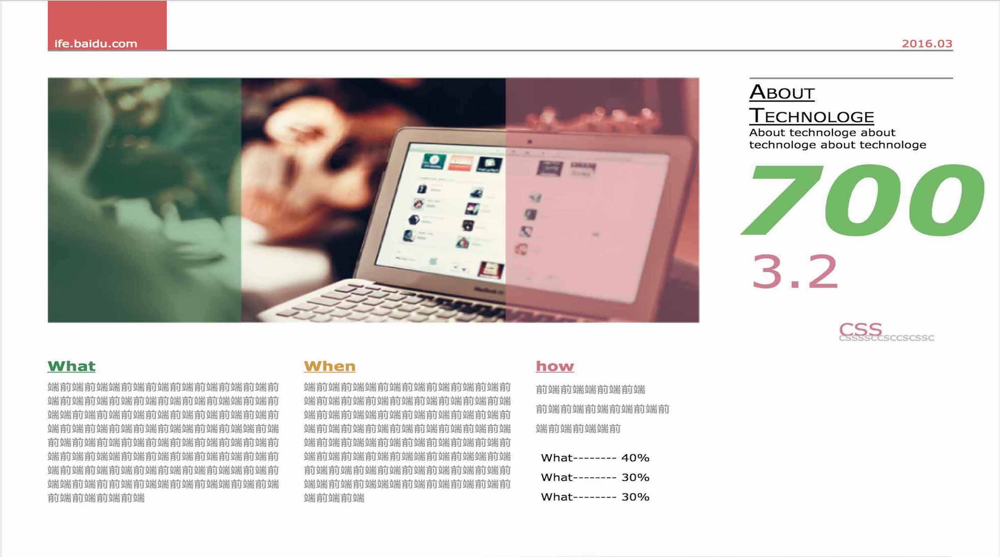

小董君
生命不息，折腾不止
基本信息
联系方式
邮箱：taosang@sina.cn
手机：183-9239-4051
微信：taosang1992
教育背景
学校：西安文理学院
学历：统招本科
专业：生物科学（2011-2015）
相关链接
- FreeCodeCamp——FCC 上我的主页
- CodePen——在线作品地址
- Github——我的 Github 地址
- 简书——我的博客主发平台
工作经历
深圳市友福同享信息科技有限公司
2017-07 至今 | 前端工程师
西安丝路软件有限责任公司
2015-04~2016-04 | 软件工程师
掌握的技术
- 掌握基本的PS用法，会用 PS 切图
- 能用 HTML／CSS 完成静态页面制作
- 了解 HTML5／CSS3 新特性，用过其中一些 API，能用CSS3动画作出一些动态页面效果,了解 Flexbox 的用法
- 能用原生 JS 或 jQuery 实现一些页面交互效果
- 了解关系型数据库，会用 SQL 进行增删改查
- 了解后端语言，可以看懂 Java,PHP 等后端代码
- 懂得 git 的基本操作和管理代码
- 曾在开源中国翻译过开源软件，可以看懂并翻译英文技术文章
- 懂得用 Google 和 Stack Overflow 等自行解决遇到的大部分问题

Random Quote Machine

- 项目简介与功能
- 使用原生JS实现所有功能
- 使用了 Twitter 的分享 API
- 点击「随机古诗词」可以切换诗词及其颜色和背景色
- 点击分享按钮可以分享至 Twitter
Show the local weather

- 项目简介与功能
- 使用了jQuery Ajax 请求 API 数据
- 使用了 Openweather API 和 IP查询 API
- 可以显示用户所在地的天气情况
- 当天气改变时，天气图标和背景图片也会跟着变化


可拖拽和旋转的 3D 相册
- 项目简介与功能
- 使用了原生 JS 和 CSS3 3D 变形完成所有功能
- 可以使用鼠标拖拽、移动、翻转相册
- 每次刷新随机20张图片展示
- 可以自由控制其自动旋转与否
一公升的眼泪粉丝站
- 项目简介与功能
- 根据《JavaScript Dom 编程艺术》案例改写
- 使用原生 JS 完成的单页面网站
企业官网
- 项目简介与功能
- 使用纯手写 HTML/CSS/JS 实现
- 实现了首页、文章页、文章列表页
ZAZAR
- 项目简介与功能
- 纯静态页面
- 美食展示主页
静态官网
- 项目简介与功能
- 纯静态页面
- 使用 CSS 3 渐变实现内凹圆角

模拟报纸排版
- 项目简介与功能
- 纯静态页面
- 手写 HTML/CSS 实现模拟报纸排版的效果